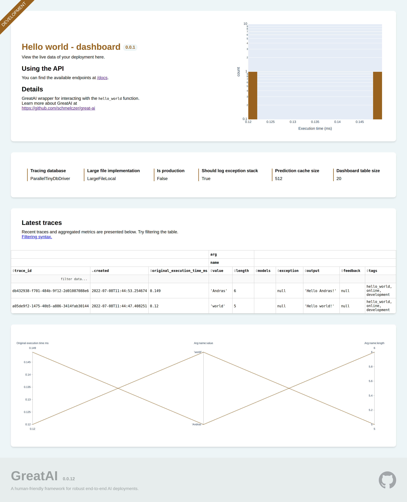
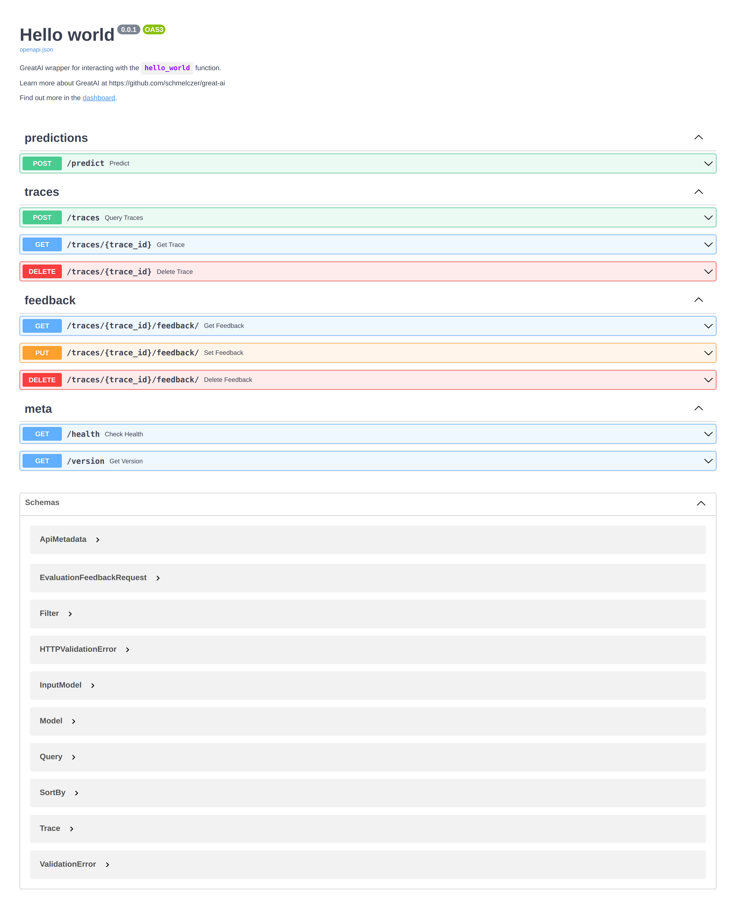

Overview of GreatAI#


Applying AI is becoming increasingly easier but many case studies have shown that these applications are often deployed poorly. This may lead to suboptimal performance and to introducing unintended biases. To extend the list of available solutions, GreatAI helps you easily transform your prototype AI code into production-ready software.
Case studies
"There is a need to consider and adapt well established SE practices which have been ignored or had a very narrow focus in ML literature." — John et al.
"Finally, we have found that existing tools to aid Machine Learning development do not address the specificities of different projects, and thus, are seldom adopted by teams." — Haakman et al.
"Because a mature system might end up being (at most) 5% machine learning code and (at least) 95% glue code, it may be less costly to create a clean native solution rather than re-use a generic package." — Sculley et al.
"For example, practice 25 is very important for “Traceability", yet relatively weakly adopted. We expect that the results from this type of analysis can, in the future, provide useful guidance for practitioners in terms of aiding them to assess their rate of adoption for each practice and to create roadmaps for improving their processes. — Serban et al.
Features#
- Save prediction traces of each prediction including arguments and model versions
- Save feedback and merge it into a ground-truth database
- Version and store models and data on shared infrastructure (MongoDB GridFS, S3-compatible storage, shared local-volume)
- Automatically scaffolded custom REST API (and OpenAPI schema) for easy integration
- Input validation
- Sensible cache-policy
- Seamless support for both synchronous and
asyncinference methods - Easy integration with other remote GreatAI instances
- Built-in parallelisation (with support for multiprocessing, async, and mixed modes) for batch processing
- Well-tested utilities for common NLP tasks (cleaning, language-tagging, sentence-segmentation, etc.)
- A simple, unified configuration interface
- Fully-typed API for IntelliSense support
- Auto-reload for development
- Docker support for deployment
- Dashboard for high-level overview and searching traces
- Shadow deployment
Hello world#
from great_ai import GreatAI
@GreatAI.create #(1)
def hello_world(name: str) -> str: #(2)
return f"Hello {name}!"
-
@GreatAI.createwraps yourhello_worldfunction with aGreatAIinstance. The function will behave very similarly but:- its return value becomes a
Trace[str], - it gets a
process_batchmethod for supporting parallel execution, - and it can be deployed using the
great-aicommand-line tool.
- its return value becomes a
-
Typing functions is recommended in general, however, not necessary for GreatAI to work.
Note
In practice, hello_world could be an inference function of some AI/ML application. But it could also just wrap a black-box solution of some SaaS. Either ways, it is imperative to have continuos oversight of the services you provide and data you process.
Navigate to localhost:6060 in your browser.


Success
Your GreatAI service is ready for production use. Many of the SE4ML best-practices are configured and implemented automatically. To have full control over your service and to understand what else you might need to do in your use case, continue reading this documentation.
Why is this GREAT?#
GreatAI fits between the prototype and deployment phase of your (or your organisation's) AI development lifecycle. This is highlighted with blue in the diagram. Here, a number of best practices can be automatically implemented concerning the following 5 aspects:
- General: use any Python library without restriction
- Robust: have error-handling and well-tested utilities out-of-the-box
- End-to-end: utilise end-to-end feedback as a built-in, first-class concept
- Automated: focus only on what actually requires your attention
- Trustworthy: deploy models that you and society can confidently trust
Why GreatAI?#
There are other, existing solutions aiming to facilitate this phase. Amazon SageMaker and Seldon Core provide the most comprehensive suite of features. If you have the opportunity use those, do that because they're great.
However, research indicates that professionals rarely use them. This may be due to their inherent setup and operating complexity. GreatAI is designed to be as simple to use as possible. Its clear, high-level API and sensible default configuration makes it extremely easy to start using. Despite its relative simplicity over Seldon Core, it still implements many best-practices, and thus, can meaningfully improve your deployment without requiring prohibitively large effort.